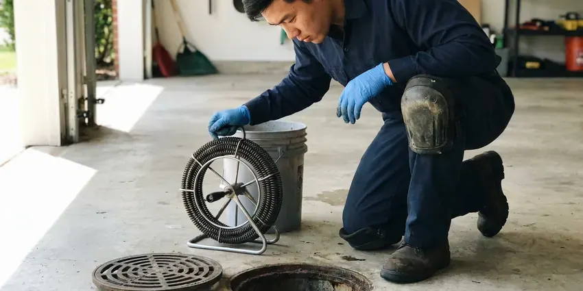

Garbage Disposal Replacement in Cumberland Hill, RI
Upgrade to a modern garbage disposal in Cumberland Hill, RI with a clean install and a strong warranty.
- Disposals on the Truck
- Quiet and Stronger Models
- Clear Pricing
- Fresh Mounting Hardware

Replace Your Worn Out Garbage Disposal Today in Cumberland Hill, RI
Not sure it needs replacing? We check first and tell you straight.
Garbage Disposal Replacement in Cumberland Hill, RI
JPN Plumbing replaces garbage disposals that leak from the body, trip constantly or grind poorly. The old unit comes out, the flange and drain arm get inspected, and the new disposal goes in on fresh mounting hardware with a new discharge gasket. Every swap gets tested.
Our expertise includes:
- Installing stronger replacement units
- Fresh flange and mount with each unit
- Cleanup and leak testing after every job

Additional Kitchen Plumbing Services in Cumberland Hill, RI
Our kitchen plumbing services in Cumberland Hill, RI cover sinks, disposals, dishwashers, and grease traps so your kitchen stays clean, safe, and fully functional.


Customers
Why Choose JPN Plumbing for Garbage Disposal Replacement in Cumberland Hill, RI?
Replacements we install meet the codes used in Rhode Island homes for traps, dishwasher drains and grounding. Older setups often skip something. It is common to find a dishwasher hose without a high loop or an ungrounded disposal, and we fix both rather than copying what was there.
- Fresh Hardware, New mount, flange and gaskets with every replacement.
- Code Compliance, Every replacement follows local Cumberland Hill, RI plumbing code for traps and dishwasher drains.
- Haul-Away, We remove the old unit and take it with us.
Citywide Coverage
No matter where you live in Cumberland Hill, a plumber can usually reach you the same day. Dispatch is local. Calls go to the closest plumber with the right unit on board, which keeps the wait short when the sink is full and the dishwasher cannot drain.
Experienced Team
Our licensed plumbers have replaced every kind of disposal, including continuous-feed and batch-feed models. They have seen it all. They deal with rusted mounts, cracked flanges and taped cord splices as a matter of routine, and they fix them rather than hanging a new unit on bad parts in Cumberland Hill homes.
Safety-First Approach
Every disposal replacement starts with the power off at the breaker or plug. A meter confirms the wires are dead. The new unit gets a ground connection and a strain relief clamp on the cord, so vibration cannot work the cord loose inside a damp cabinet over the years.
Trusted Certified Cumberland Hill Plumbing Services Professionals
At JPN Plumbing, we are proud to offer certified plumbing services throughout Cumberland Hill, RI. Credentials matter in this trade. Every repair, install and maintenance visit follows strict safety and quality rules, and the plumbers doing the work carry recognized industry credentials.
Call Us Now PHCC Plumbing Contractor Recognition
PHCC Plumbing Contractor Recognition Better Business Bureau (BBB) Accreditation
Better Business Bureau (BBB) Accreditation Angi Certified Pro
Angi Certified Pro ISO 9001 Quality Management Certification
ISO 9001 Quality Management CertificationDisposal Replacement in Cumberland Hill, RI: How It Works
Standard Garbage Disposal Replacement in Cumberland Hill
Every swap starts with the power off. We disconnect the dishwasher hose and the discharge tube, turn the mounting ring to drop the old unit, then pull the old flange and clean off the dried putty so the new flange seats flat in the sink opening. New putty, new gaskets, new mount. Every joint gets checked with water running before we finish.

Replacement Options by Price in Cumberland Hill
Entry-level units work for light use, mid-range units suit most families, and premium models add quiet operation and longer warranties. You hear what each tier offers in horsepower, grind stages, noise and warranty, and then we quote your pick with install included. No upselling.
Commercial Disposal Replacement in Cumberland Hill, RI
Commercial disposals run 1 to 5 horsepower and usually include a control panel and a water solenoid. We replace the unit on its mounting collar, reconnect the controls so water runs whenever the motor does, and check the drain to the grease trap where the local rules require it. Downtime costs money. We schedule the swap before or after service.
Like-for-Like Disposal Swap in Cumberland Hill
When the old unit and the new one share a mount, the swap is quick and the trap usually lines up without changes. We still replace the flange gasket and putty if they have hardened, and we check the discharge tube for cracks, since old plastic tubes split right at the gasket. It is about an hour. The old unit leaves with us.
Same-Day Disposal Replacement in Cumberland Hill, RI
With water standing in the sink, waiting a week is not an option. We keep 1/2 and 3/4 HP units, mounts and cord kits on board, which lets us diagnose, replace and test in one visit without a supply run. Morning calls usually get afternoon slots.
Disposal Replacement With Dishwasher Connection in Cumberland Hill, RI
Dishwashers that drain into the disposal need the knockout plug in the new unit removed first. The hose gets a new clamp, and we confirm an air gap or high loop so sink water cannot flow back into the dishwasher. Both appliances get tested.
Disposal Replacement Cost and Value in Cumberland Hill, RI
The model and any wiring or drain changes set the price. Basic swaps cost least, and quieter, stronger models cost more up front but tend to last longer and come with better warranties. You pick the level.

Urgent Disposal Replacement in Cumberland Hill
With water on the floor or the sink backing up, turn off the power and stop using it. Same-day replacement is usual because we carry common models, and acting fast limits damage to the cabinet and floor. Set a pan under the drip.
Local Disposal Replacement in Cumberland Hill, RI
Looking for disposal replacement near you in Cumberland Hill, RI? JPN Plumbing has plumbers in the area most days, so a same-day swap is often possible. Check the label on the old unit. With the model number from the bottom of the unit, we know the mount and can bring a match that keeps the existing flange.
When the sink is backed up, speed matters. Our plumbers work across Cumberland Hill every day with replacement units on the truck, and most replacements wrap up about an hour after we arrive, with the old unit hauled away. One visit does it.
JPN Plumbing at a Glance
- Licensed and insured plumbers serving Cumberland Hill, RI
- 24/7 emergency service with same-day scheduling
- Clear written estimates, no hidden fees
- 4.8-star rated by 684+ Rhode Island customers
Cumberland Hill Map
Cumberland Hill Information
- Population
- 8,140
- Area codes
- Local
- Service area
- Cumberland Hill and towns within a 40 mile drive
- Nearby
- Woonsocket, Valley Falls, Central Falls, Greenville
Private wells serve many rural homes, and owners around Cumberland Hill benefit from testing for acidity, iron and other typical concerns. Fresh mounting hardware and a new disposal in Cumberland Hill, RI resets that wear and keeps the sink draining.
Expert Services
Call JPN Plumbing for reliable plumbing work done by licensed pros in Cumberland Hill, RI.
Our Specialized Plumbing Services in Cumberland Hill, RI
At JPN Plumbing, you get every kind of plumbing service from one company across Cumberland Hill, RI. From leak detection to full system installs, our team works fast and charges fair prices on homes and commercial properties alike. Here are the core services we offer:




Professional drain services, Cumberland Hill

Our Garbage Disposal Replacement Steps in Cumberland Hill, RI
Most disposal replacements take about an hour, start to finish.
Book the Swap
Call JPN Plumbing at (401) 364-2507 to set up a time. Picking a unit is part of the call.
Remove the Old Unit
Your plumber disconnects the drain after shutting off power and removes the old disposal without damaging the sink.
Install the New Unit
We set a new flange and mount, hang the new disposal and reconnect the drain, hose and power.
Frequently Asked Questions About Garbage Disposal Replacement in Cumberland Hill
Most replacements run $200 to $600 with the unit. Basic 1/3 HP units start near $100 and premium 1 HP models can pass $300, with labor and any drain or wiring work making up the difference. We quote before starting.
One to two hours covers most swaps. That includes disconnecting the old unit, installing the new one and testing it, while brand changes, a lowered drain or new wiring can stretch the job a bit longer.
Yes. Manufacturer warranties usually run one to ten years, depending on the model. On top of that, JPN Plumbing warranties the labor on the installation, and the terms go on your invoice so the coverage is clear.
Yes. We install the new brand and update the mount and flange when needed.
Most swaps take about an hour. Upgrades with new wiring or drain changes may take longer.
A same-mount swap is doable for many homeowners. For wiring or drain changes, a plumber is safer.
Plan on one to two hours. That covers removing the old unit, installing the new one and testing, and a brand change or drain work can add a little time.
Age and the type of failure decide it. Fix a newer unit with a jam or loose flange, but replace an older one that leaks from the body or no longer grinds well.
What People Are Saying About Our Plumbing Experts?

Tyler J.
We bought a taller comfort height toilet for my dad, who just had knee surgery. The plumber pulled the old one, found the flange was cracked, and replaced it before setting the new bowl. Took about two hours.
Toilet Installation · Woonsocket, RI
Mark T.
The floor drain in our office break room backed up every few weeks. The plumber ran a cable, then put a camera down and found roots at a joint about thirty feet out. Seeing it on the screen made the decision easy.
Drain Cleaning · Central Falls, RI
Megan L.
Our upstairs tub drained so slowly that every shower turned into a bath. JPN Plumbing pulled a wad of hair out of the stopper and then snaked the line past the trap. Three months later it still drains fast.
Drain Cleaning · Providence, RI
Laura S.
Our 40 gallon tank started leaking from the bottom after thirteen years. The tech hauled the old one out, set a new unit with a fresh expansion tank, and had hot water running in about four hours. He took the old tank with him too.
Water Heater Replacement · Woonsocket, RIMonica A.
Our water bill nearly doubled in one month with no change in how we used water. The tech checked the meter, heard the leak under the hallway with his equipment, and opened a hole about a foot square. Fixed the same day.
Slab Leak Repair · Cumberland Hill, RIPaul B.
Our pit pump ran nonstop even in dry weather. The plumber found the check valve was stuck open, so the same water kept cycling back into the pit. New valve, new float switch, done in an hour. It runs quiet now.
Sump Pump · Valley Falls, RI